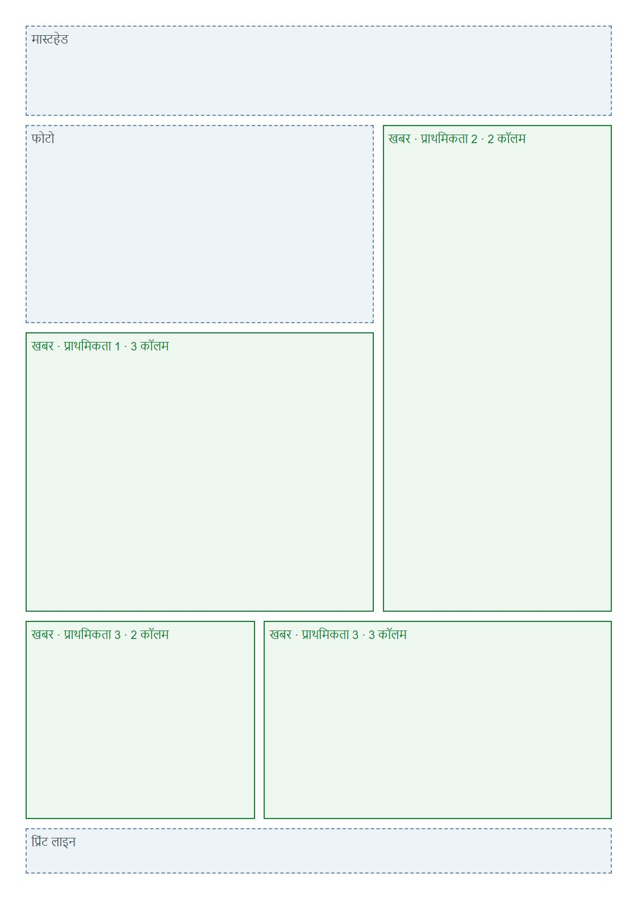
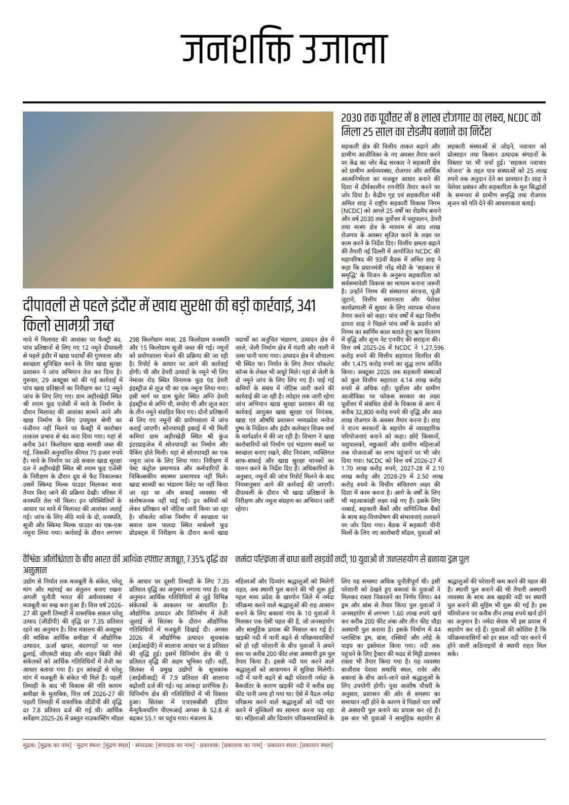
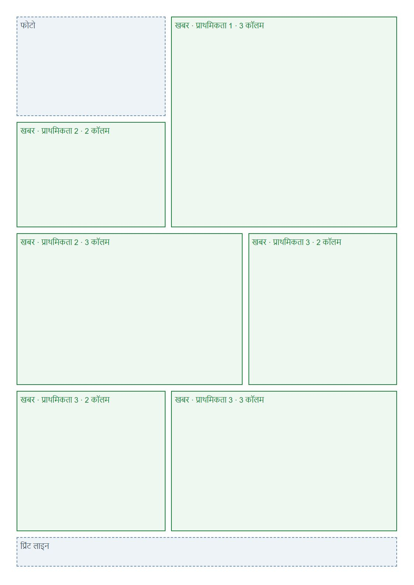
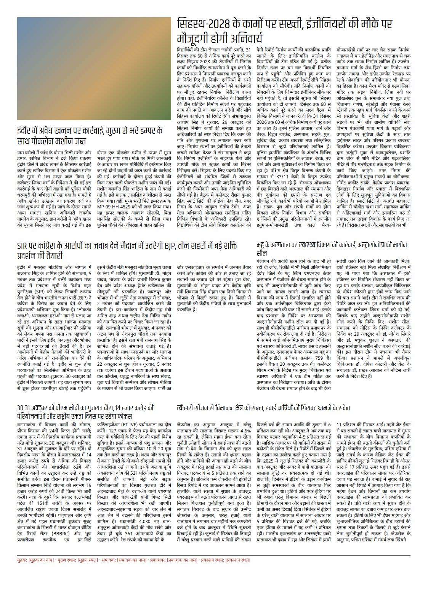
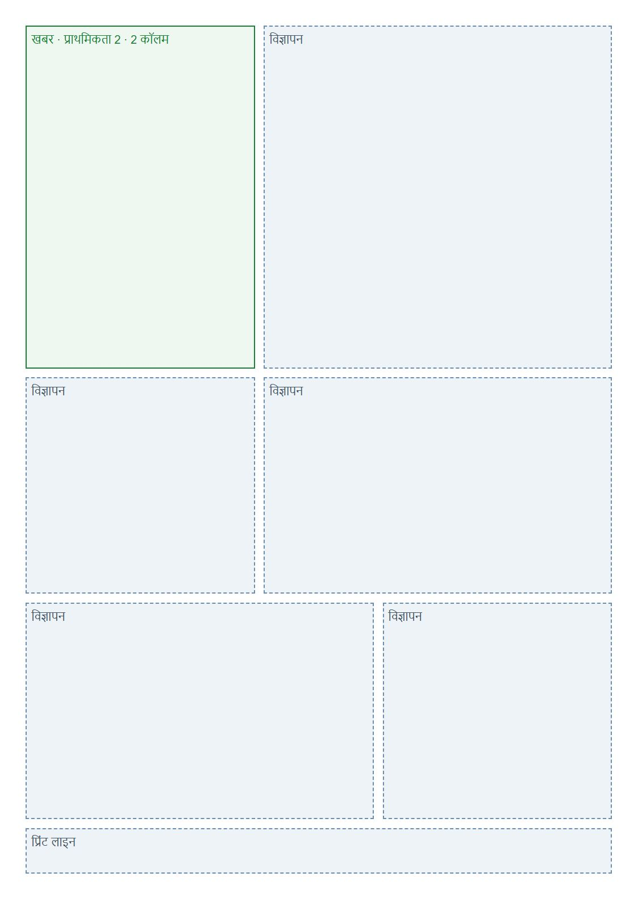
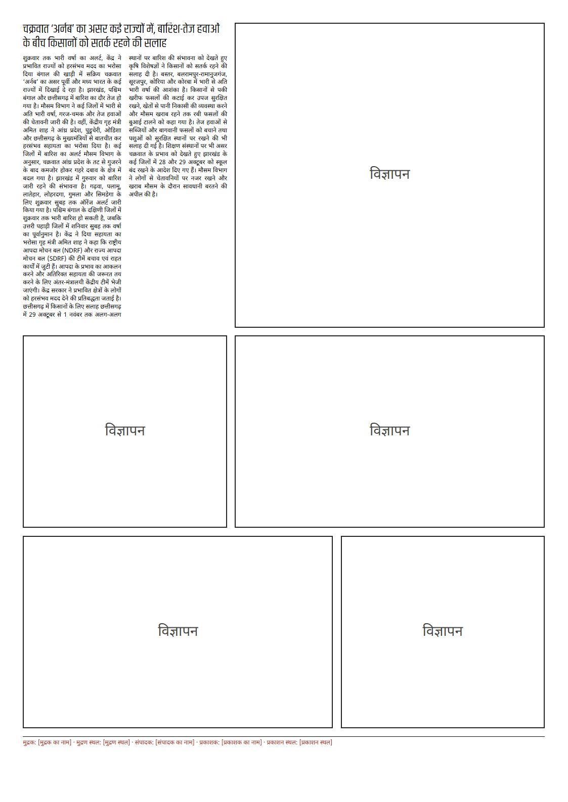

The grid is assumed (A3, 5 columns, GG-007) and the imprint holds placeholders, shown in red. Body is Noto Sans 400 until Amal decides on Halant (D-048). Masthead and headlines are Khand 400: weight 700 is not approved (D-050). Each slot holds a different real story from Janshakti's site, uncut, in fetch order. No auto-pager exists yet, so nothing matches story length to slot. Paragraphs are joined, and headlines sit in a fixed band, because how a story maps to a frame is not settled.
Over counts lines of text that did not fit, at the frame's column width. Under counts empty line places left in the frame after the story ends. A short last line counts as used, so Under never counts part of a line, and it is 0 whenever anything is over. It counts body lines only: the headline band, photos and the space between slots are not in it.


| Story slot | Story | Characters | Priority | Columns | Fill | Over | Under |
|---|---|---|---|---|---|---|---|
| lead | s1: दीपावली से पहले इंदौर में खाद्य सुरक्षा की बड़ी कार्रवाई, 341 किलो सामग्री जब्त | 2973 | 1 | 3 | 96% | 0 | 3 |
| secondary | s2: 2030 तक पूर्वोत्तर में 8 लाख रोजगार का लक्ष्य, NCDC को मिला 25 साल का रोडमैप बनाने का निर्देश | 2325 | 2 | 2 | 58.2% | 0 | 41 |
| third | s3: वैश्विक अनिश्चितता के बीच भारत की आर्थिक रफ्तार मजबूत, 7.35% वृद्धि का अनुमान | 2832 | 3 | 2 | 197.2% | 35 | 0 |
| fourth | s4: नर्मदा परिक्रमा में बाधा बनी खड़की नदी, 10 युवाओं ने जनसहयोग से बनाया ड्रम पुल | 1826 | 3 | 3 | 85.2% | 0 | 8 |


| Story slot | Story | Characters | Priority | Columns | Fill | Over | Under |
|---|---|---|---|---|---|---|---|
| top | s5: सिंहस्थ-2028 के कामों पर सख्ती, इंजीनियरों की मौके पर मौजूदगी होगी अनिवार्य | 4285 | 1 | 3 | 115.6% | 14 | 0 |
| top-left | s6: इंदौर में अवैध खनन पर कार्रवाई, मुरम से भरे डम्पर के साथ पोकलेन मशीन जब्त | 1240 | 2 | 2 | 123.1% | 6 | 0 |
| middle | s7: SIR पर कांग्रेस के आरोपों का जवाब देने मैदान में उतरेगी BJP, तीन शहरों में बड़े शक्ति प्रदर्शन की तैयारी | 2019 | 2 | 3 | 79.4% | 0 | 13 |
| side | s8: महू के अस्पताल पर स्वास्थ्य विभाग की कार्रवाई, अल्ट्रासोनोग्राफी मशीन सील | 1636 | 3 | 2 | 95.5% | 0 | 2 |
| bottom-a | s9: 30-31 अक्टूबर को पीएम मोदी का गुजरात दौरा, 14 हजार करोड़ की परियोजनाओं और राष्ट्रीय एकता दिवस पर रहेगा फोकस | 2766 | 3 | 2 | 175% | 30 | 0 |
| bottom-b | s10: त्योहारी सीजन से विमानन क्षेत्र को संबल, हवाई यात्रियों की गिरावट थामने के संकेत | 2720 | 3 | 3 | 111.7% | 7 | 0 |


| Story slot | Story | Characters | Priority | Columns | Fill | Over | Under |
|---|---|---|---|---|---|---|---|
| story | s11: चक्रवात ‘अर्नब’ का असर कई राज्यों में, बारिश-तेज हवाओं के बीच किसानों को सतर्क रहने की सलाह | 2063 | 2 | 2 | 77.3% | 0 | 15 |
Rebuild: node scripts/demo-templates.mjs.